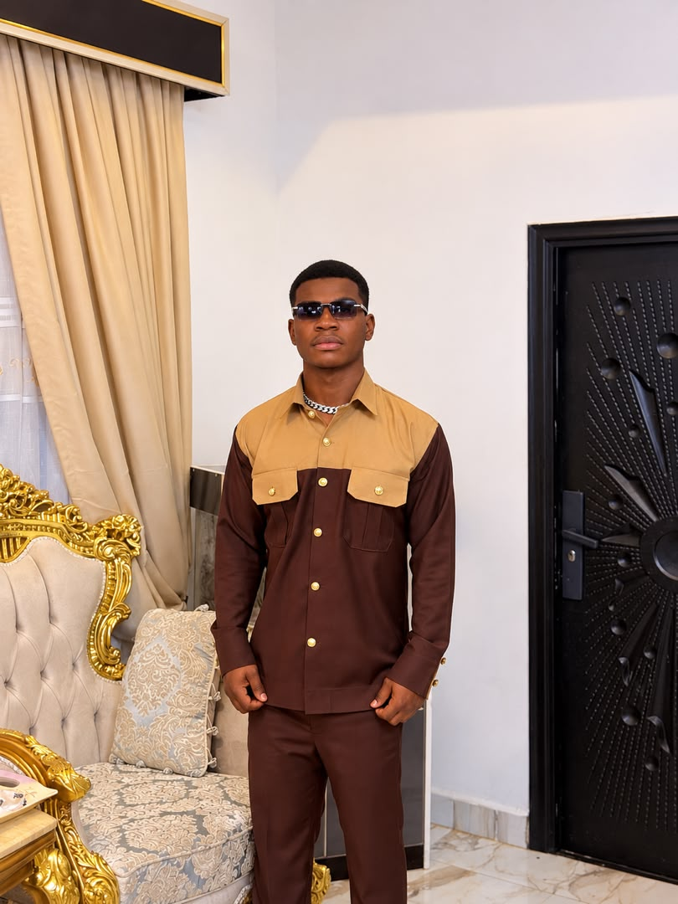

01 / EXPERTISE
DESIGN · DEVELOPMENT · DIGITAL
Turning Ideas
Into Digital
Experiences.
I’m Anderson Oteng — a website developer, designer and software developer creating modern digital experiences with purpose.
AO / 01CREATIVE DEVELOPER
Anderson OtengANDERSON.DEV
</>Build with purpose
✧Design with intent
01SCROLL TO EXPLORE
01Good ideas deserve
A LITTLE ABOUT ME
Good ideas deserve
great digital homes.

ANDERSON OTENGDESIGNER & DEVELOPER
ANDERSON.DEVPROFILE / 01
I’m Anderson Oteng, the creative behind ANDERSON.DEV—a website developer, website designer, UI/UX designer and software developer.
I work across both sides of a digital product: shaping how it looks and how it works. I turn ideas into clear pages, useful interfaces and responsive experiences designed to feel natural on phones, tablets and desktops.
My toolkit includes HTML, CSS, JavaScript, React, Python, GitHub, UI/UX design and responsive development. I use these skills to create websites, web applications, software and digital solutions.
The project gallery covers media, entertainment, business automation and mobility ideas. Each entry can grow with real screenshots, technology notes, live sites and source code as you add those details.
Good digital work should feel easy to use, look considered and work well on every screen. That is the standard I bring to the ANDERSON.DEV brand.
Anderson OtengWebsite developer · Website designer · UI/UX designer · Software developer
Let’s make something meaningful →02A versatile toolkit.
TOOLS & EXPERTISE
A versatile toolkit.
Built for real work.
The right tool for the right idea. These are the technologies and practices I bring to each project.
02 / EXPERTISE
Design
03 / EXPERTISE
Delivery
Curious by default. Always learning.
03
SELECTED WORK
Ideas, made real.
A selection of work and project concepts. Add your live links, repositories and real project screenshots when ready.
✧ Cover artwork is illustrative starter art. Replace it with your project screenshots.
04From first thought
WHAT I CAN DO FOR YOU
From first thought
to finished product.
Whether you have a clear brief or only the first spark of an idea, we can shape the right digital solution together.
Website development
Fast, accessible websites built around your goals, your audience and the details that make your brand yours.
→Website design
Distinctive digital identities and considered page layouts, from first impression to final interaction.
→UI/UX design
Clear journeys, useful interfaces and thoughtful prototypes that help people get things done.
→Software development
Practical software experiences shaped to solve real problems and grow with the people who use them.
→Web applications
Responsive web apps with reusable components, purposeful interactions and a reliable foundation.
→05Experience, learning
THE JOURNEY SO FAR
Experience, learning
& milestones.
HAVE A PROJECT IN MIND?
Let’s make
it happen.
Have a project, opportunity or idea you’d like to talk about? I’d love to hear from you.
ANDERSON.DEV / DIGITAL WITH INTENTGood work starts
with a conversation.
with a conversation.